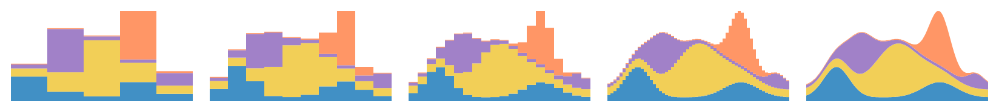
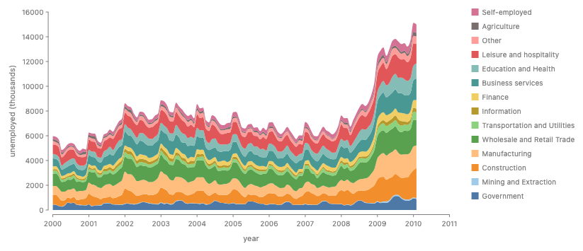
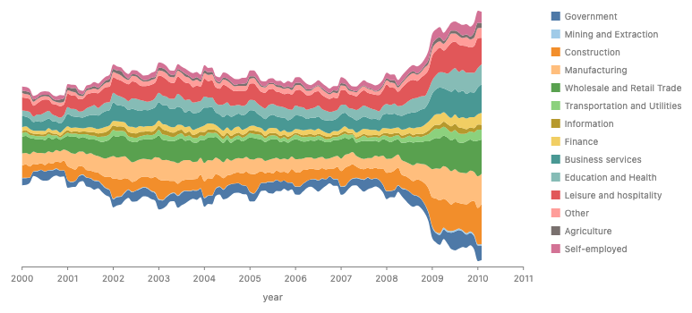
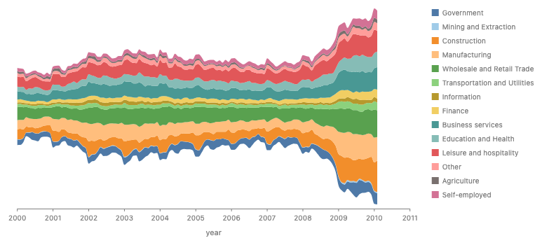
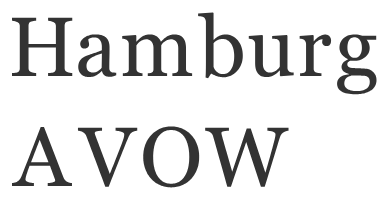

<title>Stack Profiles</title>
<style>
  :root {
    --bg: #fbfaf7;
    --fg: #1f2328;
    --muted: #5f6670;
    --card: #ffffff;
    --line: #e3e0d8;
    --accent: #2f6f9f;
    --rec: #e9f3ea;
    --rec-line: #7aa77f;
    --hl: #fff1b8;
    --code-bg: #f6f5f1;
    --bad: #b3412e;
    --hk: #8a3ea8;
    --hs: #1f7a3a;
    --hn: #9a5b00;
    --hc: #7b8590;
    --ht: #2f6f9f;
  }
  @media (prefers-color-scheme: dark) {
    :root:not([data-theme="light"]) {
      --bg: #16181b;
      --fg: #e6e6e3;
      --muted: #a0a6ad;
      --card: #1e2125;
      --line: #33373d;
      --accent: #7fb3dc;
      --rec: #1d2a20;
      --rec-line: #4f7d55;
      --hl: #4a4020;
      --code-bg: #191b1f;
      --bad: #e58a77;
      --hk: #d199ef;
      --hs: #8fd4a0;
      --hn: #f0b46a;
      --hc: #8a929b;
      --ht: #7fb3dc;
    }
  }
  :root[data-theme="dark"] {
    --bg: #16181b;
    --fg: #e6e6e3;
    --muted: #a0a6ad;
    --card: #1e2125;
    --line: #33373d;
    --accent: #7fb3dc;
    --rec: #1d2a20;
    --rec-line: #4f7d55;
    --hl: #4a4020;
    --code-bg: #191b1f;
    --bad: #e58a77;
    --hk: #d199ef;
    --hs: #8fd4a0;
    --hn: #f0b46a;
    --hc: #8a929b;
    --ht: #7fb3dc;
  }
  * {
    box-sizing: border-box;
  }
  body {
    margin: 0;
    background: var(--bg);
    color: var(--fg);
    font:
      16px/1.55 "Inter",
      system-ui,
      sans-serif;
  }
  main {
    max-width: 1180px;
    margin: 0 auto;
    padding: 24px 16px 80px;
  }
  h1 {
    font-size: 2rem;
    margin: 0.2em 0 0.4em;
  }
  h2 {
    margin-top: 2.4em;
    border-bottom: 1px solid var(--line);
    padding-bottom: 0.2em;
  }
  h3 {
    margin: 0.2em 0 0.5em;
    font-size: 1.15rem;
  }
  h4 {
    margin: 1em 0 0.3em;
  }
  a {
    color: var(--accent);
  }
  code {
    font-family: "JetBrains Mono", ui-monospace, monospace;
    font-size: 0.88em;
  }
  .summary {
    font-size: 1.05rem;
  }
  .summary li {
    margin: 0.4em 0;
  }
  .rec-box {
    background: var(--rec);
    border: 1px solid var(--rec-line);
    border-radius: 10px;
    padding: 14px 16px;
    margin: 16px 0;
  }
  .card {
    background: var(--card);
    border: 1px solid var(--line);
    border-radius: 10px;
    padding: 16px;
    margin: 16px 0;
    min-width: 0;
  }
  .card.approach.rec {
    border-color: var(--rec-line);
    box-shadow: 0 0 0 2px var(--rec) inset;
  }
  .grid {
    display: grid;
    grid-template-columns: repeat(auto-fill, minmax(min(100%, 330px), 1fr));
    gap: 16px;
  }
  .grid .card {
    margin: 0;
  }
  .grid3 {
    display: grid;
    grid-template-columns: repeat(auto-fit, minmax(min(100%, 340px), 1fr));
    gap: 16px;
  }
  .two {
    display: grid;
    grid-template-columns: repeat(auto-fit, minmax(min(100%, 420px), 1fr));
    gap: 12px;
  }
  .figs {
    display: grid;
    grid-template-columns: repeat(auto-fit, minmax(min(100%, 300px), 1fr));
    gap: 12px;
    margin-bottom: 8px;
  }
  figure {
    margin: 0;
  }
  img {
    max-width: 100%;
    height: auto;
    display: block;
    border-radius: 6px;
    background: #fff;
  }
  figcaption {
    font-size: 0.85rem;
    color: var(--muted);
    margin-top: 4px;
  }
  .small img {
    margin-bottom: 8px;
  }
  .small p {
    font-size: 0.9rem;
  }
  pre.code {
    background: var(--code-bg);
    border: 1px solid var(--line);
    border-radius: 8px;
    padding: 10px 0;
    overflow-x: auto;
    margin: 6px 0 10px;
    font-size: 0.84rem;
    line-height: 1.45;
  }
  pre.code code {
    display: block;
    min-width: max-content;
  }
  pre.code .ln {
    display: block;
    padding: 0 12px;
  }
  pre.code .ln.hl {
    background: var(--hl);
    box-shadow: inset 3px 0 0 var(--accent);
  }
  .label {
    font-size: 0.82rem;
    font-weight: 600;
    color: var(--muted);
    margin: 10px 0 2px;
    text-transform: none;
  }
  .muted {
    color: var(--muted);
  }
  .table-wrap {
    overflow-x: auto;
  }
  table {
    border-collapse: collapse;
    width: 100%;
    font-size: 0.9rem;
  }
  th,
  td {
    border: 1px solid var(--line);
    padding: 6px 8px;
    text-align: left;
    vertical-align: top;
  }
  table.verdict {
    width: auto;
    margin: 8px 0;
  }
  table.verdict th {
    width: 2.5em;
  }
  td.bad {
    color: var(--bad);
  }
  details {
    margin: 8px 0;
  }
  summary {
    cursor: pointer;
    color: var(--accent);
    font-weight: 600;
  }
  .toggle {
    position: sticky;
    top: env(safe-area-inset-top, 0px);
    z-index: 5;
    background: var(--bg);
    padding: 8px 0;
    border-bottom: 1px solid var(--line);
    display: flex;
    gap: 8px;
    align-items: center;
    flex-wrap: wrap;
  }
  .toggle button {
    font: inherit;
    border: 1px solid var(--line);
    background: var(--card);
    color: var(--fg);
    border-radius: 6px;
    padding: 3px 12px;
    cursor: pointer;
  }
  .toggle button[aria-pressed="true"] {
    border-color: var(--accent);
    color: var(--accent);
    font-weight: 600;
  }
  body.py .lang-js {
    display: none;
  }
  body:not(.py) .lang-py {
    display: none;
  }
  .decisions li {
    margin: 0.5em 0;
  }
  .item {
    display: grid;
    grid-template-columns: repeat(auto-fit, minmax(min(100%, 420px), 1fr));
    gap: 16px;
    align-items: start;
    border-top: 1px solid var(--line);
    padding-top: 12px;
    margin-top: 12px;
  }
  .wide img {
    width: 100%;
  }
  .note {
    font-size: 0.9rem;
    color: var(--muted);
  }
  .insert .figs {
    grid-template-columns: repeat(auto-fit, minmax(min(100%, 440px), 1fr));
  }
  table.methods td {
    min-width: 9em;
  }
  .hljs-keyword,
  .hljs-built_in {
    color: var(--hk);
  }
  .hljs-string {
    color: var(--hs);
  }
  .hljs-number,
  .hljs-literal {
    color: var(--hn);
  }
  .hljs-comment {
    color: var(--hc);
    font-style: italic;
  }
  .hljs-title,
  .hljs-attr,
  .hljs-property {
    color: var(--ht);
  }
</style>
<link rel="preconnect" href="https://fonts.googleapis.com" /><link
  href="https://fonts.googleapis.com/css2?family=Inter:wght@400;600&family=JetBrains+Mono&display=swap"
  rel="stylesheet"
/>
<main>
  <h1>Stack profiles, in three examples</h1>
  <ul class="summary">
    <li>
      A stacked area is the limit of stacked bars. Draw it as bars of width dx
      and shrink dx. Each column is an ordinary stack of boxes, and the stack
      only moves each box. So the one new thing a stack needs is a child that
      reports many thin boxes, its <b>slices</b>, instead of one. The list of
      slices is the shape's <b>profile</b>.
    </li>
    <li>
      A stack's <code>baseline</code> option chooses where its own 0 is:
      <code>Baseline.start()</code>, <code>Baseline.middle()</code>,
      <code>Baseline.wiggle()</code> or
      <code>Baseline.at(part, fraction)</code>. Each one gives every slice an
      offset and never changes a thickness.
    </li>
    <li>
      A density is two channels over one hidden variable t,
      <code>ribbon({ x: mass.support(), h: mass.density() })</code>.
      <code>partition</code> cuts that profile into cells, which draws the
      croissant with no grid and no <code>intersect</code>.
    </li>
    <li>
      <code>spread</code> can read the same slices to space shapes by their
      outlines, <code>Spacing.contour(n)</code>. On traced glyphs and on
      circles, triangles and squares, contact spacing does not look even. The
      page shows where, and lists the choices.
    </li>
  </ul>
  <p class="note">
    This page is focused on three examples and the idea behind them. The full
    survey of eleven examples is at commit
    <a
      href="https://github.com/gofish-graphics/gofish-graphics/blob/2f3b2a4bf/proposals/stack-profile/proposal.md"
      >2f3b2a4bf</a
    >.
  </p>
  <div class="toggle">
    <span class="muted">Code in</span
    ><button data-lang="js" aria-pressed="true">JavaScript</button
    ><button data-lang="py" aria-pressed="false">Python</button>
  </div>
  <details>
    <summary>Terms used on this page</summary>
    <div class="table-wrap">
      <table>
        <tr>
          <td><b>Slice</b></td>
          <td>
            A thin box of a shape at one position u along the cross axis: how
            far the shape reaches below and above its baseline there.
          </td>
        </tr>
        <tr>
          <td><b>Profile</b></td>
          <td>
            A shape's list of slices, or in the limit the function from u to its
            reach below and above its baseline. A box is one slice that does not
            change. Precedents: a tidy tree's contour, a skyline in
            computational geometry, and the calculus region between two graphs.
          </td>
        </tr>
        <tr>
          <td><b>Baseline</b></td>
          <td>
            A node's own 0 point. A rect's baseline is its bottom edge, and it
            bubbles up: a parent with <code>alignment: "baseline"</code> lines
            up its children's 0 points. A stack's <code>baseline</code> option
            chooses where the stack's 0 is. In the code the model is
            <code>StackOrigin</code> (<code>constraints/distribute.ts</code>).
          </td>
        </tr>
        <tr>
          <td><b>Per-x form</b></td>
          <td>
            <code>scatter</code> or <code>spread</code> by x, then
            <code>stack</code>, which is today's spelling of a stacked area. The
            stack runs once in each x slice and sees only that slice.
          </td>
        </tr>
        <tr>
          <td><b>Field expression</b></td>
          <td>
            <code>field("mass")</code>, a column expression like polars'
            <code>pl.col("mass")</code>. Bare, it is a value per row. Its
            methods make other kinds of value (see "What the methods compute").
          </td>
        </tr>
        <tr>
          <td><b>Box gap and contact gap</b></td>
          <td>
            Two ways to measure the space between neighbors. A box gap is
            between bounding boxes, as <code>spread</code> does today. A contact
            gap is the smallest gap between facing outlines, measured slice by
            slice.
          </td>
        </tr>
      </table>
    </div>
  </details>
  <h2 id="limit">Why stacking may reshape an area</h2>
  <article class="card">
    <p>
      Stacking areas changes the shape of each area, which a box cannot do.
      Josh's framing: "a ribbon's area is a limit of some AABBs. So if that
      shape change can happen with the discrete AABB union I feel like it's more
      acceptable and natural to have the ribbon behavior be guided by that." (An
      AABB is an axis-aligned bounding box, the box every GoFish node reports
      today.) This section makes that the explanation of stacking.
    </p>
    <figure class="wide">
      
      <figcaption>
        Four series as stacked bars 5, 10, 20 and 60 bars wide, then the stacked
        area. Each bar reads its series at the bar's middle. Real renders with
        today's <code>spread</code> and <code>stack</code>; each panel scales to
        its own height.
      </figcaption>
    </figure>
    <p class="label">Each bar panel, which runs today</p>
    <pre
      class="code lang-js"
    ><code class="language-javascript" data-hl="">chart(rows) // one row per series per bar
  .flow(
    spread({ by: &quot;bar&quot;, dir: &quot;x&quot;, spacing: 0 }),
    stack({ by: &quot;series&quot;, dir: &quot;y&quot; })
  )
  .mark(rect({ w: barWidth, h: &quot;value&quot;, fill: &quot;series&quot; }));</code></pre>
    <pre
      class="code lang-py"
    ><code class="language-python" data-hl="">chart(rows).flow(
    spread(by=&quot;bar&quot;, dir=&quot;x&quot;, spacing=0),
    stack(by=&quot;series&quot;, dir=&quot;y&quot;),
).mark(rect(w=bar_width, h=&quot;value&quot;, fill=&quot;series&quot;))</code></pre>
    <h4>The argument, checked step by step</h4>
    <ol>
      <li>
        <b>A ribbon is the limit of a row of thin rects</b>, one per slice of x.
        Correct. One detail: each rect reads the series at its slice, so the
        limit is the series' curve through its rows. How a series is read
        between its rows (its <code>curve</code>) is part of the shape.
      </li>
      <li>
        <b>In the discrete case, stacking uses only what boxes allow.</b>
        Correct. Each column is an ordinary stack of rects, as in the panels
        above. The stack moves each rect and never changes its width or height.
      </li>
      <li>
        <b
          >One series' rects form a staircase band whose outline changes
          shape</b
        >, because each slice moves by a different amount, while no box is
        reshaped. Correct. In the limit the staircase becomes the stacked
        ribbon.
      </li>
      <li>
        <b
          >So the profile rule is: a child may report many boxes, and the parent
          moves each one.</b
        >
        Correct. The thickness at each x never changes, only the offset, so
        stacking is a translation per slice. This is what the full survey called
        a frame that is a boundary curve: the curve is the list of offsets.
      </li>
      <li>
        <b>Series sampled at different x fit too.</b> Splitting a slice in two
        does not change the shape, so the columns can use the union of every
        series' breakpoints. Correct, with one condition: the new slice's height
        is the series' value at the new x, which comes from its curve (linear
        between rows, as ggplot2 reads it). Outside its own x range a series'
        slice is empty, so its thickness there is 0.
      </li>
      <li>
        <b>Contour spacing reads the same slices.</b> The closest approach of
        two shapes is the smallest gap over their shared slices, a skyline.
        Correct, with a limit: the gap is measured along the spacing axis in
        each slice, not as a straight-line distance. Example 3 shows what that
        does to glyphs and shapes.
      </li>
      <li>
        <b
          >A rigid shape (a circle, text, a line with no thickness) is one box
          that cannot be split, so it gets one translation.</b
        >
        This needs a correction. The full survey made a rigid part in a curved
        stack an error. The slice picture gives a rigid part a defined place
        instead: it rests on the highest point of the boundary below it across
        its width, as a skyline does. But then the slices under it are no longer
        glued, and a gap opens wherever the boundary below is lower. So the
        picture turns the old rule into a choice, which is decision 2.
      </li>
    </ol>
    <h4>How it relates to the approaches in the full survey</h4>
    <p>
      Runner-up B, the per-x form, is this argument at a fixed dx: the slices
      are the rows' x positions, each slice is stacked on its own, and the
      ribbon connects the stacked points. Approach A is the limit: a child
      reports its profile as a function of x, so the stack does not depend on
      where the rows happen to be. A can ship first as B, by choosing the slices
      as the union of breakpoints. That is the declared shortcut in the full
      survey.
    </p>
    <h4>Does every baseline only move slices?</h4>
    <div class="table-wrap">
      <table>
        <tr>
          <th>Baseline</th>
          <th>Offset of slice u</th>
          <th>Only moves slices?</th>
        </tr>
        <tr>
          <td><code>Baseline.start()</code></td>
          <td>0</td>
          <td>Yes</td>
        </tr>
        <tr>
          <td><code>Baseline.middle()</code></td>
          <td>minus half the total at u</td>
          <td>Yes</td>
        </tr>
        <tr>
          <td><code>Baseline.at(part, fraction)</code></td>
          <td>
            minus (the start of <code>part</code> at u plus
            <code>fraction</code> times its thickness at u)
          </td>
          <td>Yes</td>
        </tr>
        <tr>
          <td><code>Baseline.wiggle()</code></td>
          <td>
            a running sum over the slices to the left, chosen to flatten the
            bands (d3's <code>stackOffsetWiggle</code>)
          </td>
          <td>
            Yes, but its value depends on dx. d3 sums over the rows' x, so finer
            rows give a slightly different curve. In the limit the sum is an
            integral, so the proposal defines wiggle on the profile, not on the
            rows.
          </td>
        </tr>
      </table>
    </div>
    <p>
      Every baseline holds. What breaks the rule is a divide, a stack with a
      given whole such as <code>size: normalize</code>: it rescales each slice's
      thicknesses to the whole, so it resizes slices. That is why a divide is
      not a baseline.
    </p>
  </article>
  <h2 id="baselines">1. Stacked area, with each baseline</h2>
  <article class="card">
    <p>
      US unemployment by industry, monthly from 2000 to 2010, 14 industries
      (vega-datasets <code>unemployment-across-industries</code>, from the
      Bureau of Labor Statistics). The stack's <code>baseline</code> chooses
      where its own 0 is. Each choice is an offset per slice, so every band
      keeps its thickness.
    </p>
    <div class="item">
      <figure class="">
        
        <figcaption>
          <code>Baseline.start()</code>, the default: the first industry starts
          at 0. Real render of today's spelling.
        </figcaption>
      </figure>
      <div>
        <p class="label">Proposed</p>
        <pre
          class="code lang-js"
        ><code class="language-javascript" data-hl="1,2">chart(jobs)
  .flow(stack({ by: &quot;series&quot;, dir: &quot;y&quot; }))
  .mark(ribbon({ x: &quot;date&quot;, h: &quot;count&quot;, fill: &quot;series&quot; }));</code></pre>
        <pre
          class="code lang-py"
        ><code class="language-python" data-hl="0,1">chart(jobs).flow(stack(by=&quot;series&quot;, dir=&quot;y&quot;)).mark(
    ribbon(x=&quot;date&quot;, h=&quot;count&quot;, fill=&quot;series&quot;)
)</code></pre>
        <p class="label">Today (runs)</p>
        <pre
          class="code"
        ><code class="language-javascript" data-hl="1">chart(jobs)
  .flow(scatter({ by: &quot;date&quot;, x: &quot;date&quot; }), stack({ by: &quot;series&quot;, dir: &quot;y&quot; }))
  .mark(ribbon({ h: &quot;count&quot;, fill: &quot;series&quot; }));</code></pre>
      </div>
    </div>
    <div class="item">
      <figure class="">
        
        <figcaption>
          <code>Baseline.middle()</code>: the middle of the whole is at 0
          (emulated: d3's silhouette offset computed in <code>derive</code>).
          The y axis is dropped, because position no longer means an amount from
          0.
        </figcaption>
      </figure>
      <div>
        <p class="label">Proposed</p>
        <pre
          class="code lang-js"
        ><code class="language-javascript" data-hl="1">chart(jobs)
  .flow(stack({ by: &quot;series&quot;, dir: &quot;y&quot;, baseline: Baseline.middle() }))
  .mark(ribbon({ x: &quot;date&quot;, h: &quot;count&quot;, fill: &quot;series&quot; }));</code></pre>
        <pre
          class="code lang-py"
        ><code class="language-python" data-hl="0">chart(jobs).flow(stack(by=&quot;series&quot;, dir=&quot;y&quot;, baseline=Baseline.middle())).mark(
    ribbon(x=&quot;date&quot;, h=&quot;count&quot;, fill=&quot;series&quot;)
)</code></pre>
        <p class="label">Today (the offset computed by hand, about 20 lines)</p>
        <pre
          class="code"
        ><code class="language-javascript" data-hl="2,4">chart(jobs)
  .flow(
    derive((rows) =&gt; stackRows(rows, { offset: &quot;silhouette&quot; })),
    scatter({ by: &quot;date&quot;, x: &quot;date&quot; }),
    scatter({ by: &quot;series&quot;, yMin: &quot;y0&quot;, yMax: &quot;y1&quot; })
  )
  .mark(ribbon({ fill: &quot;series&quot; }));</code></pre>
      </div>
    </div>
    <div class="item">
      <figure class="">
        
        <figcaption>
          <code>Baseline.wiggle()</code>: the baseline curve that flattens the
          bands, a streamgraph (emulated: d3's wiggle offset computed in
          <code>derive</code>).
        </figcaption>
      </figure>
      <div>
        <p class="label">Proposed</p>
        <pre
          class="code lang-js"
        ><code class="language-javascript" data-hl="1">chart(jobs)
  .flow(stack({ by: &quot;series&quot;, dir: &quot;y&quot;, baseline: Baseline.wiggle() }))
  .mark(ribbon({ x: &quot;date&quot;, h: &quot;count&quot;, fill: &quot;series&quot; }));</code></pre>
        <pre
          class="code lang-py"
        ><code class="language-python" data-hl="0">chart(jobs).flow(stack(by=&quot;series&quot;, dir=&quot;y&quot;, baseline=Baseline.wiggle())).mark(
    ribbon(x=&quot;date&quot;, h=&quot;count&quot;, fill=&quot;series&quot;)
)</code></pre>
        <p class="label">Today (the offset computed by hand)</p>
        <pre
          class="code"
        ><code class="language-javascript" data-hl="2,4">chart(jobs)
  .flow(
    derive((rows) =&gt; stackRows(rows, { offset: &quot;wiggle&quot; })),
    scatter({ by: &quot;date&quot;, x: &quot;date&quot; }),
    scatter({ by: &quot;series&quot;, yMin: &quot;y0&quot;, yMax: &quot;y1&quot; })
  )
  .mark(ribbon({ fill: &quot;series&quot; }));</code></pre>
      </div>
    </div>
    <div class="item">
      <figure class="">
        
        <figcaption>
          <code>Baseline.at("Neutral", 0.5)</code>: a diverging stack whose 0 is
          the middle of the Neutral bar. Real render of today's spelling, on a
          small survey.
        </figcaption>
      </figure>
      <div>
        <p class="label">
          Proposed (Trait.diverging stays the default and desugars to this)
        </p>
        <pre
          class="code lang-js"
        ><code class="language-javascript" data-hl="3">chart(survey)
  .flow(
    spread({ by: &quot;question&quot;, dir: &quot;y&quot; }),
    stack({ by: &quot;response&quot;, dir: &quot;x&quot;, baseline: Baseline.at(&quot;Neutral&quot;, 0.5) })
  )
  .mark(rect({ w: &quot;count&quot;, fill: &quot;response&quot; }));</code></pre>
        <pre
          class="code lang-py"
        ><code class="language-python" data-hl="2">chart(survey).flow(
    spread(by=&quot;question&quot;, dir=&quot;y&quot;),
    stack(by=&quot;response&quot;, dir=&quot;x&quot;, baseline=Baseline.at(&quot;Neutral&quot;, 0.5)),
).mark(rect(w=&quot;count&quot;, fill=&quot;response&quot;))</code></pre>
        <p class="label">Today (runs; the unit's trait sets the 0)</p>
        <pre
          class="code"
        ><code class="language-javascript" data-hl="4">chart(survey, {
  schema: {
    response: Unit({
      domain: Domain.discrete(LEVELS),
      traits: [Trait.diverging()],
    }),
  },
})
  .flow(
    spread({ by: &quot;question&quot;, dir: &quot;y&quot; }),
    stack({ by: &quot;response&quot;, dir: &quot;x&quot; })
  )
  .mark(rect({ w: &quot;count&quot;, fill: &quot;response&quot; }));</code></pre>
      </div>
    </div>
    <p>
      The values name a place on the stack, as <code>alignment</code>'s values
      do, so d3's <code>zero</code> becomes <code>start</code> and Vega-Lite's
      <code>center</code> becomes <code>middle</code>.
      <code>Baseline.end()</code> also exists, for a stack that grows the other
      way. An explicit <code>baseline</code> over a unit with
      <code>Trait.diverging</code> is an error, because the unit already fixes
      the 0. With <code>middle</code> and <code>wiggle</code> a position on the
      value axis is no longer an amount from 0, so the axis can only measure
      thickness, which is why streamgraphs drop it.
    </p>
    <p>
      <b>Precedent.</b> d3's <code>stackOffsetNone</code>,
      <code>Silhouette</code>, <code>Wiggle</code> and <code>Diverging</code>;
      Vega-Lite's <code>stack: "zero" | "center" | "normalize"</code>;
      matplotlib's
      <code
        >stackplot(baseline="zero" | "sym" | "wiggle" | "weighted_wiggle")</code
      >. Byron and Wattenberg (2008) call the bottom curve g<sub>0</sub> the
      baseline.
    </p>
    <p>
      <b>Naming.</b> <code>baseline</code> is already GoFish's word for a node's
      0 point, and <code>alignment: "baseline"</code> already reads it, so one
      word names one thing: the stack sets its baseline, and the parent lines
      baselines up. <code>origin</code> is out because the origin lives on the
      measure type, and an option by that name would read as overriding it.
      <code>alignment</code> is out because it is the parent's rule for the
      other axis.
    </p>
  </article>
  <h2 id="croissant">
    2. Croissant: a density cut into equal-probability slices
  </h2>
  <article class="card">
    <div class="item">
      <figure class="">
        
        <figcaption>
          Today's gallery story <code>Forward Syntax/Croissant</code> (real
          render). The proposed code draws the same picture; it does not run
          yet.
        </figcaption>
      </figure>
      <div>
        <p class="label">Proposed</p>
        <pre
          class="code lang-js"
        ><code class="language-javascript" data-hl="3,12">const params = [{ mean: 0, sd: 1 }];
const d = dist.normal({ mean: &quot;mean&quot;, sd: &quot;sd&quot; });
chart(params)
  .flow(partition({ by: d.bin(Bin.quantiles(5)), dir: &quot;x&quot; }))
  .mark(
    layer([
      ribbon({
        x: d.support(),
        h: d.density(),
        inset: 3,
        fill: PAPER_FILL,
        stroke: PAPER_STROKE,
      }),
      circle({ cx: d.median(), cy: 6, r: 3, fill: PAPER_STROKE }),
    ])
  );</code></pre>
        <pre
          class="code lang-py"
        ><code class="language-python" data-hl="2,11">params = [{&quot;mean&quot;: 0, &quot;sd&quot;: 1}]
d = dist.normal(mean=&quot;mean&quot;, sd=&quot;sd&quot;)
chart(params).flow(partition(by=d.bin(Bin.quantiles(5)), dir=&quot;x&quot;)).mark(
    layer(
        [
            ribbon(
                x=d.support(),
                h=d.density(),
                inset=3,
                fill=PAPER_FILL,
                stroke=PAPER_STROKE,
            ),
            circle(cx=d.median(), cy=6, r=3, fill=PAPER_STROKE),
        ]
    )
)</code></pre>
        <p class="label">
          Today (stories/forwardsyntax/Croissant.stories.tsx; the sequence
          repeats three times in the file)
        </p>
        <pre
          class="code"
        ><code class="language-javascript" data-hl="1,6,16,17,22,30,36">const normPdf = (x, mu = 0, sd = 1) =&gt;
  Math.exp(-0.5 * ((x - mu) / sd) ** 2) / (sd * Math.sqrt(2 * Math.PI));
const gridOf = (
  f,
  lo,
  hi,
  n
) =&gt;
  Array.from({ length: n }, (_, i) =&gt; {
    const x = lo + ((hi - lo) * i) / (n - 1);
    return { x, pdf: f(x) };
  });
const croissant = (grid, { n = 10, fill = FILL, stroke = STROKE } = {}) =&gt;
  layer([
    chart(grid)
      .flow(scatter({ x: &quot;x&quot; }))
      .mark(ribbon({ h: &quot;pdf&quot; }).name(&quot;density&quot;).hidden()),
  ]).relate(({ density }) =&gt; [
    chart(grid)
      .flow(
        derive((rows) =&gt;
          quantileRows(rows, { x: &quot;x&quot;, density: &quot;pdf&quot;, n: 1000 })
        ),
        partition({ by: field(&quot;x&quot;).bin(Bin.quantiles(n)), dir: &quot;x&quot; })
      )
      .mark(
        layer([
          intersect({ fill, stroke, strokeWidth: 2 }, [
            density,
            region({ inset: 3 }),
          ]),
          circle({ cx: field(&quot;x&quot;).median(), cy: 6, r: 3, fill: stroke }),
        ])
      ),
  ]);
// on [-3, 3] the missing tails move the outer cells&#x27; medians
const normalGrid = gridOf((x) =&gt; normPdf(x), -4, 4, 401);
croissant(normalGrid, { n: 5, fill: PAPER_FILL, stroke: PAPER_STROKE });</code></pre>
      </div>
    </div>
    <p>
      <code>d</code> is a field expression over a distribution. Each method
      makes a different kind of value. <code>d.bin(Bin.quantiles(5))</code> is a
      key that cuts d's axis into 5 cells. <code>d.support()</code> and
      <code>d.density()</code> are the position and the height of one curve over
      a hidden variable t: the support is t &#8614; t and the density is t
      &#8614; f(t). The ribbon samples t and evaluates both channels at each
      sample, as a parametric curve (x(t), y(t)) does.
      <code>d.median()</code> is one number per cell. <code>partition</code> on
      d's axis restricts the curve to each cell, which in the slice picture
      keeps the slices inside the cell. A cell of a Dist is the Dist over that
      cell with its mass, so the slices meet exactly. No <code>intersect</code>,
      hidden ribbon, <code>relate</code>, grid or quantile rows.
    </p>
    <h4>What the methods compute</h4>
    <p>
      A field expression like <code>field("mass")</code> works like polars'
      <code>pl.col("mass")</code>: it sees one column. Every named method on it
      except <code>bin</code> is one named instance of one callback shape,
      <code>(x, xs) =&gt; result</code>. <code>x</code> is this row's value of
      the field, and <code>xs</code> is the values of that field over the rows
      of the current group: the rows the mark or operator reading the channel
      was given. A user can always write the callback instead of the method.
      Polars has the same two views of one column:
      <code>map_elements</code> gets one value, and
      <code>map_batches</code> gets the whole Series.
    </p>
    <p class="label">
      Each method and the callback it stands for (bins are open; see below)
    </p>
    <pre
      class="code lang-js"
    ><code class="language-javascript" data-hl="">field(&quot;mass&quot;); // (x) =&gt; x  (JS lets a callback drop xs)
field(&quot;mass&quot;).sum(); // (_, xs) =&gt; sum(xs)
field(&quot;mass&quot;).median(); // (_, xs) =&gt; median(xs)
field(&quot;mass&quot;).normalize(); // (x, xs) =&gt; x / sum(xs)
field(&quot;mass&quot;).support(); // (_, xs) =&gt; (t) =&gt; t, over the density&#x27;s range
field(&quot;mass&quot;).density(); // (_, xs) =&gt; kde(xs), a function (t) =&gt; number

// a custom method, used like a built-in one
const share = field(&quot;mass&quot;).then((x, xs) =&gt; x / max(xs), { unit: &quot;ratio&quot; });</code></pre>
    <pre
      class="code lang-py"
    ><code class="language-python" data-hl="">field(&quot;mass&quot;)  # lambda x, xs: x
field(&quot;mass&quot;).sum()  # lambda _, xs: sum(xs)
field(&quot;mass&quot;).median()  # lambda _, xs: median(xs)
field(&quot;mass&quot;).normalize()  # lambda x, xs: x / sum(xs)
field(&quot;mass&quot;).support()  # lambda _, xs: (lambda t: t), over the density&#x27;s range
field(&quot;mass&quot;).density()  # lambda _, xs: kde(xs), a function of t

share = field(&quot;mass&quot;).then(lambda x, xs: x / max(xs), unit=&quot;ratio&quot;)</code></pre>
    <div class="table-wrap">
      <table class="methods">
        <tr>
          <th>Kind</th>
          <th>Named method</th>
          <th>Formula</th>
          <th>Callback</th>
        </tr>
        <tr>
          <td>Per row</td>
          <td><code>field("mass")</code></td>
          <td>the row's value</td>
          <td><code>(x) =&gt; x</code>. A function accessor works today.</td>
        </tr>
        <tr>
          <td rowspan="5">Fold: the same value for every row of the group</td>
          <td><code>.sum()</code></td>
          <td>sum of the present values; missing values are dropped</td>
          <td><code>(_, xs) =&gt; sum(xs)</code></td>
        </tr>
        <tr>
          <td><code>.mean()</code></td>
          <td>sum &divide; n over the present values</td>
          <td><code>(_, xs) =&gt; mean(xs)</code></td>
        </tr>
        <tr>
          <td><code>.median()</code></td>
          <td>
            sort the present values; with h = (n &minus; 1) &times; 0.5,
            interpolate between the values at floor(h) and ceil(h): the type-7
            quantile at 0.5, as R and numpy compute it (<code>medianOf</code>,
            <code>fieldExpr.ts</code>)
          </td>
          <td><code>(_, xs) =&gt; median(xs)</code></td>
        </tr>
        <tr>
          <td><code>.count()</code></td>
          <td>n</td>
          <td><code>(_, xs) =&gt; xs.length</code></td>
        </tr>
        <tr>
          <td><code>.distinct()</code></td>
          <td>the number of different values</td>
          <td><code>(_, xs) =&gt; new Set(xs).size</code></td>
        </tr>
        <tr>
          <td>Per row, reading the group</td>
          <td><code>.normalize()</code></td>
          <td>x &divide; the group's sum</td>
          <td><code>(x, xs) =&gt; x / sum(xs)</code></td>
        </tr>
        <tr>
          <td rowspan="2">Curve: a function of a hidden variable t</td>
          <td><code>.support()</code></td>
          <td>
            t itself, over the range the expression's density uses. That range
            is open (see the decisions); the lean follows ggdist: for rows, the
            data's own range, with a bounded estimator; for a <code>Dist</code>,
            its own range, or its 0.001 to 0.999 quantiles where that range is
            unbounded
          </td>
          <td><code>(_, xs) =&gt; (t) =&gt; t</code></td>
        </tr>
        <tr>
          <td><code>.density()</code></td>
          <td>
            f(t) = (1 &divide; bw) &Sigma;<sub>i</sub> K((t &minus;
            x<sub>i</sub>) &divide; bw), K the standard normal density, bw = 0.9
            &times; min(sd, IQR &divide; 1.34) &times; n<sup>&minus;1/5</sup>
            (Silverman's rule, R's <code>bw.nrd0</code>;
            <code>silvermanBandwidth</code> in <code>overlap.ts</code> computes
            it). The area under f is n. For a <code>Dist</code>, f is its exact
            density, with area 1
          </td>
          <td>
            <code>(_, xs) =&gt; kde(xs)</code>, whose result is a function
            <code>(t) =&gt; number</code>
          </td>
        </tr>
        <tr>
          <td>Key (bin)</td>
          <td>
            <code>.bin(Bin.step(500))</code>, <code>Bin.thresholds(n)</code>,
            <code>Bin.quantiles(n)</code>
          </td>
          <td>
            On main the cells come from the column's domain (its
            <code>HasDomain</code>), computed once where the data is typed, in
            <code>chart()</code> or the last <code>derive</code>, so every group
            of a split sees the same cells, empty ones included (#763; story
            <code>SharedBinsAcrossGroups</code>). <code>Bin.step(w)</code>:
            cells [k&times;w, (k+1)&times;w). <code>Bin.thresholds(n)</code>: a
            step from d3's <code>tickIncrement</code> over the domain, for about
            n cells. <code>Bin.quantiles(n)</code>: edges at the type-7
            quantiles i/n of the column's values (<code>cells.ts</code>)
          </td>
          <td>Open: how a bin's cells are shared is under review</td>
        </tr>
      </table>
    </div>
    <p>
      <b>Precedent.</b> A fold that returns the same value for every row of its
      group is a window function: SQL's
      <code>median(x) OVER (PARTITION BY g)</code>, or polars'
      <code>pl.col("x").median().over("g")</code>. <code>normalize</code> fits
      the same shape with no change, <code>(x, xs) =&gt; x / sum(xs)</code>, as
      SQL's <code>x / sum(x) OVER (PARTITION BY g)</code> does.
    </p>
    <p>
      <b>Bins are the open item.</b> A bin's cells do not come from the group's
      <code>xs</code>: on main they come from the column's domain, fixed where
      the data is typed, and the empty cells and their order are kept for the
      axis. So a bin does not fit the one callback shape as written. How a bin's
      cells are shared is under review, so this page proposes no callback form
      for bins.
    </p>
    <p>
      <b>Curves.</b> A density is drawn by two channels of one mark,
      <code>x: mass.support()</code> (t &#8614; t) and
      <code>h: mass.density()</code> (t &#8614; f(t)). The ribbon samples t and
      evaluates every channel that is a function of t at each sample, as a
      parametric curve (x(t), y(t)) does. The range of t belongs to the
      expression, so no spec names it. Two curve channels over different
      variables in one mark, such as <code>x: mass.support()</code> with
      <code>h: length.density()</code>, are an error. Precedent: the closest is
      ggdist (Matt Kay's R package for distributions), whose
      <code>stat_slabinterval</code> computes <code>x</code> or
      <code>y</code> (the slab's positions), <code>pdf</code>,
      <code>cdf</code> and <code>n</code> (<code>Inf</code> for an analytic
      distribution). Vega-Lite's density transform outputs two fields,
      <code>value</code> and <code>density</code>, and ggplot2 maps
      <code>after_stat(x)</code> and <code>after_stat(density)</code>.
    </p>
    <p>
      <b>Area.</b> The area under <code>mass.density()</code> is its row count,
      so stacked densities add up. ggdist users get the same curve by writing
      <code>aes(thickness = after_stat(pdf * n))</code>. ggdist instead scales
      thickness after the fact with <code>normalize</code> (<code>"all"</code>,
      <code>"panels"</code>, <code>"xy"</code>, <code>"groups"</code> or
      <code>"none"</code>); here that is the stack's or the spread's job, not
      the curve's.
    </p>
    <p>
      <b>The range of t.</b> Tools split. seaborn runs a KDE 3 bandwidths past
      the data (<code>cut=3</code>), and ggplot2 also extends past it. ggdist,
      for rows, uses <code>density_bounded()</code>, a reflection estimator, and
      usually trims to the data's range; for an analytic distribution it uses
      <code>p_limits</code>, the 0.001 and 0.999 quantiles, where the range is
      unbounded. This is one of the decisions.
    </p>
    <p>
      <b>Naming.</b> <code>support()</code> is the chosen name (Josh is checking
      it with Matt Kay, author of ggdist). Rejected: <code>value()</code>, which
      clashes with GoFish's <code>value(...)</code> constructor, and
      <code>points()</code> or <code>grid()</code>, which name the sampling that
      specs should not see.
    </p>
    <p><b>Consequences, stated plainly.</b></p>
    <ol>
      <li>
        <b>A fold cannot be told from a per-row value without running it.</b> A
        channel that needs one value per group (a <code>circle</code>'s
        <code>cx</code> in a cell) checks that the value is the same across the
        group, and fails with the existing "not constant across the connected
        group" error.
      </li>
      <li>
        <b
          >A fold called once per row is n calls of O(n) work, O(n&sup2;) in
          all.</b
        >
        A named method avoids it because the engine knows it is a fold and
        computes it once per group. For a callback, the engine memoizes the
        result per group (same <code>xs</code>, same result), or the user
        declares it a fold, <code>.then(fn, { fold: true })</code>, and it is
        called once per group.
      </li>
      <li>
        <b>A callback sees one field, so it cannot use two.</b> A mean of x
        weighted by w reads two fields, so it is a <code>derive</code> step, or
        an expression over two fields, not a <code>.then</code>.
      </li>
      <li>
        <b>Units get simpler.</b> The callback sees one field, so the unit it
        receives is known. It declares only what it returns: the same unit
        (<code>sum</code>, <code>median</code>), a ratio
        (<code>normalize</code>), a count, or a curve whose values are that
        unit's density. Without the declaration, CanSum and the other checks
        cannot run, so an undeclared result is treated as a plain number that
        cannot be stacked.
      </li>
      <li>
        <b>Serialization.</b> A named method crosses to Python as data. A
        callback written in Python reaches JS as a batch call
        (<code>RESOLVE_ROWS</code>, <code>channels.ts</code>), which today
        returns one value per row; a fold would be called per group.
      </li>
    </ol>
    <p>
      <b>Custom methods.</b> Main has no <code>.then</code> or similar on a
      field expression; the closest are the <code>derive(fn)</code> flow step,
      which sees whole rows, and the batch accessor above. The proposal is one
      method, <code>field("x").then((x, xs) =&gt; ..., { unit, fold })</code>,
      which returns a field expression, so it chains and reads like a built-in
      method. Polars splits the same idea into <code>map_elements</code> (one
      value), <code>map_batches</code> (the whole column) and
      <code>pipe</code> (a function from expression to expression).
      <code>.then</code> covers the first two with one shape.
      <code>pipe</code> is plain function composition in JS
      (<code>share(field("x"))</code>), so it needs no method. A named custom
      method is just a function that returns <code>.then(...)</code>.
    </p>
    <p>
      <b>Docs plan.</b> Each method's API reference entry (its descriptor
      <code>doc</code>) states its formula and the callback it stands for, as in
      the table above. This lands with the implementation.
    </p>
  </article>
  <h2 id="spacing">3. Contour spacing: box gap against contact gap</h2>
  <article class="card">
    <p>
      When shapes are irregular, the space between neighbors can be measured two
      ways. A <b>box gap</b> is the gap between bounding boxes, which is today's
      <code>spread</code>. A <b>contact gap</b> is the smallest gap between the
      facing outlines, measured slice by slice: the shapes slide together until
      the closest slice reaches the gap. Both renders in each pair use the same
      gap. The offsets are computed by hand (a throwaway helper,
      <code>spacingModels.ts</code>) and drawn with today's engine. The glyphs
      are traced from Georgia (serif) and Arial (sans) with fontTools.
    </p>
    <p class="label">
      Proposed: how the gap is measured is the value of spacing
    </p>
    <pre
      class="code lang-js"
    ><code class="language-javascript" data-hl="6">spread({ by: &quot;month&quot;, dir: &quot;y&quot;, spacing: 4 }); // sugar for Spacing.box(4)
spread({
  by: &quot;month&quot;,
  dir: &quot;y&quot;,
  spacing: Spacing.pitch(70, { at: &quot;baseline&quot; }),
}); // today&#x27;s anchor
spread({ by: &quot;month&quot;, dir: &quot;y&quot;, spacing: Spacing.contour(4) });</code></pre>
    <pre
      class="code lang-py"
    ><code class="language-python" data-hl="2">spread(by=&quot;month&quot;, dir=&quot;y&quot;, spacing=4)
spread(by=&quot;month&quot;, dir=&quot;y&quot;, spacing=Spacing.pitch(70, at=&quot;baseline&quot;))
spread(by=&quot;month&quot;, dir=&quot;y&quot;, spacing=Spacing.contour(4))</code></pre>
    <p class="label">Today (box gap, or a pitch with anchor)</p>
    <pre
      class="code"
    ><code class="language-javascript" data-hl="1">spread({ by: &quot;month&quot;, dir: &quot;y&quot;, spacing: 4 });
spread({ by: &quot;month&quot;, dir: &quot;y&quot;, spacing: 70, anchor: &quot;baseline&quot; });</code></pre>
    <div class="figs">
      <figure class="">
        
        <figcaption>
          Ridgeline, box gap 4 px: each ridge starts above the previous one's
          box.
        </figcaption>
      </figure>
      <figure class="">
        
        <figcaption>
          Ridgeline, contact gap 4 px: each ridge drops until its base would
          touch a ridge below, so it tucks over the long tails.
        </figcaption>
      </figure>
    </div>
    <div class="figs">
      <figure class="">
        
        <figcaption>Georgia, box gap 6 px.</figcaption>
      </figure>
      <figure class="">
        
        <figcaption>Georgia, contact gap 6 px.</figcaption>
      </figure>
    </div>
    <div class="figs">
      <figure class="">
        
        <figcaption>Arial, box gap 6 px.</figcaption>
      </figure>
      <figure class="">
        
        <figcaption>Arial, contact gap 6 px.</figcaption>
      </figure>
    </div>
    <div class="figs">
      <figure class="">
        
        <figcaption>
          Circles, triangles and squares, box gap 10 px. Rows: circle,
          left-pointing triangle, square; circle, right-pointing triangle,
          square; up, circle, down, square; square, up, down, up.
        </figcaption>
      </figure>
      <figure class="">
        
        <figcaption>The same rows, contact gap 10 px.</figcaption>
      </figure>
    </div>
    <h4>What the renders show</h4>
    <ul>
      <li>
        <b>Ridgeline.</b> Contact does what it promises. Each ridge sits as low
        as it can without touching, and the column is shorter.
      </li>
      <li>
        <b>Serif, "Hamburg".</b> Contact changes almost nothing, in either font.
        Stems, serifs and round sides reach the bounding box, so the closest
        slice is at the box edge. In Georgia the serifs set the closest point,
        so the white between two stems is the gap plus two serifs, wider than
        between Arial's stems, as expected. But every stem pair gets the same
        serifs, so the word still looks even.
      </li>
      <li>
        <b>"AVOW".</b> Contact pulls A into V and V into O until their diagonals
        are 6 px apart, so AVOW sets much tighter than Hamburg in both fonts,
        and in Georgia the serifs of A and V interleave. The same smallest
        distance is not the same white: two parallel diagonals 6 px apart leave
        a thin strip, while a stem beside a bowl leaves wedges of white above
        and below its closest point.
      </li>
      <li>
        <b>Shapes.</b> In the first two rows contact and box are the same,
        because the closest points lie on the box edges (a point meeting the
        widest part of a circle, a flat side meeting a point). The circle and
        the triangle that points at it touch at one point, so that gap still
        looks larger than a flat-to-flat gap of the same 10 px. In the last two
        rows contact slides the triangles under the circle and between each
        other, so up, down, up closes into an even band, while the gap beside
        the square stays wide. A row with nested and un-nested pairs looks less
        even under contact than under box gaps.
      </li>
    </ul>
    <p>
      So contact guarantees a minimum gap and nothing more. That is what tree
      layouts, sankey node columns and the ridgeline need. It is not a model of
      looking even, and on glyphs and mixed shapes it looks uneven.
    </p>
    <h4>The choices</h4>
    <ol>
      <li>
        <b>Keep <code>Spacing.contour(n)</code> with a known limit.</b> Its docs
        say it guarantees a minimum gap, not an even look.
      </li>
      <li>
        <b
          >Add a model later that keeps the minimum gap and also reads the white
          area between outlines.</b
        >
        This is what type tools do: HT Letterspacer sets sidebearings from a
        target white area measured only to a depth inward from the outline, and
        Tim Ahrens (Kern On) notes that perception works in terms of average
        distance or white area. It would be one more
        <code>Spacing</code> strategy, so the option does not change. Our first
        emulation of an area model looked less even than contact on Josh's
        reading, so it is not proposed now.
      </li>
      <li>
        <b>Park contour spacing</b> until an example needs it, and ship
        <code>Spacing.box</code> and <code>Spacing.pitch</code> only.
      </li>
    </ol>
    <div class="table-wrap">
      <table>
        <tr>
          <th>Model</th>
          <th>Rule</th>
          <th>Where it is used</th>
        </tr>
        <tr>
          <td>Box gap</td>
          <td>the gap between bounding boxes along the axis</td>
          <td>
            today's <code>spread</code>; Graphviz <code>nodesep</code>;
            d3-sankey <code>nodePadding</code>
          </td>
        </tr>
        <tr>
          <td>Pitch</td>
          <td>a fixed distance between a named point on each child</td>
          <td>
            today's <code>anchor: "baseline"</code>; ggridges'
            <code>scale</code>
          </td>
        </tr>
        <tr>
          <td>Contact</td>
          <td>
            the smallest gap between facing outlines, slice by slice, equals the
            gap
          </td>
          <td>
            tidy trees (Reingold and Tilford, 1981, compare contours level by
            level), <code>d3.tree</code>, d3-flextree (van der Ploeg, 2014, for
            nodes of different sizes), GoTree; skyline packing
          </td>
        </tr>
      </table>
    </div>
    <p>
      <b>Naming.</b> How the gap is measured becomes the value of
      <code>spacing</code>, a strategy family (<code>Spacing</code>, uppercase,
      as the API rules ask for a choice among strategies). A plain number stays
      as sugar for <code>Spacing.box(n)</code>.
      <code>Spacing.pitch(70, { at: "baseline" })</code> replaces spread's
      <code>anchor</code> option, which about 28 story, test and docs files use
      today, each a mechanical change.
    </p>
  </article>
  <h2>Rules</h2>
  <ul>
    <li>
      <b>A shape reports its profile, a list of slices.</b> At each position u
      along the cross axis, a slice says how far the shape reaches below and
      above its baseline. A ribbon reports many slices; in the limit, a function
      of u. A rect reports one slice that does not change, its box.
    </li>
    <li>
      <b>A stack moves slices and never resizes them.</b> Its frame for a child
      is one offset per slice. Every <code>baseline</code> is a choice of those
      offsets. A divide (a given whole) resizes, so it is not a baseline.
    </li>
    <li>
      <b>Each value is a size, not a pixel count.</b> It is a data amount times
      the scale factor plus fixed pixels, so a stack can still solve its scale
      before layout.
    </li>
    <li>
      <b>Local means two things.</b> An operator reads only its children's
      summaries (a box or a profile), never their rows or vertices, and it
      writes only each child's frame. When every part is a box, the offsets are
      all equal and the frame is today's translate.
    </li>
    <li>
      <b>A profile may be a function.</b> <code>x: mass.support()</code> and
      <code>h: mass.density()</code> are both functions of one hidden variable
      t. The ribbon samples t and evaluates every channel that is a function of
      t at each sample. The range of t belongs to the expression. Two curve
      channels over different variables in one mark, such as
      <code>x: mass.support()</code> with <code>h: length.density()</code>, are
      an error.
    </li>
    <li>
      <b>Contour spacing reads the same slices.</b> The gap between two shapes
      is the smallest gap over their shared slices, measured along the spacing
      axis.
    </li>
  </ul>
  <h2>Decisions</h2>
  <ol class="decisions">
    <li>
      Is "a ribbon is the limit of thin boxes, and a stack moves each slice" the
      explanation of stacking, with the profile defined as the list of slices (a
      function in the limit)?
    </li>
    <li>
      A rigid part (a circle, text, an image, a line) in a stack of profiles:
      keep it an error that names the fix, or allow it, resting on the highest
      point of the boundary below it with a gap underneath?
    </li>
    <li>
      Keep the word <code>baseline</code>, with values
      <code>Baseline.start()</code>, <code>.end()</code>,
      <code>.middle()</code>, <code>.at(part, fraction)</code> and
      <code>.wiggle()</code>? <code>Trait.diverging</code> stays the default and
      desugars to <code>Baseline.at</code>, and an explicit
      <code>baseline</code> over a diverging unit is an error.
    </li>
    <li>
      <code>Baseline.wiggle()</code> is defined on the profile (the limit), not
      on the rows, so finer rows do not change the curve?
    </li>
    <li>
      Under <code>Baseline.middle()</code> and
      <code>Baseline.wiggle()</code> the value axis is dropped, since it can
      only measure thickness?
    </li>
    <li>
      A density's area is the mass it is made from (the row count, or 1 for a
      Dist), so stacked densities add up to the density of all rows? The other
      choice is area 1 for every curve. ggdist reaches the same curve with
      <code>after_stat(pdf * n)</code> and rescales thickness with
      <code>normalize</code>; here rescaling is the parent's job.
    </li>
    <li>
      The range of t: follow ggdist (rows trimmed to the data's range with a
      bounded estimator; a Dist over its own range, or its 0.001 to 0.999
      quantiles where unbounded), or seaborn (3 bandwidths past the data)? The
      lean is ggdist.
    </li>
    <li>
      Name: <code>support()</code> is chosen (Josh is checking it with Matt Kay,
      ggdist). Rejected: <code>value()</code>, which clashes with GoFish's
      <code>value(...)</code> constructor, and <code>points()</code> or
      <code>grid()</code>, which name the sampling.
    </li>
    <li>
      One callback shape, <code>(x, xs) =&gt; result</code>, behind every field
      method except <code>bin</code>, with
      <code>field("x").then(fn, { unit, fold })</code> for custom methods? (How
      a bin's cells are shared is under review separately.)
    </li>
    <li>
      Plan, not a question: each method's API reference entry (its descriptor
      <code>doc</code>) states its formula and the callback it stands for. This
      lands with the implementation.
    </li>
    <li>
      A cell of a Dist partition is the Dist over the cell with its mass, so
      <code>d.density()</code> in a cell is the parent's curve there?
    </li>
    <li>
      Contour spacing: keep <code>Spacing.contour(n)</code> with the known
      limit, add a minimum-gap-plus-area model later, or park contour spacing?
    </li>
    <li>
      <code>spacing</code> takes a number (sugar for
      <code>Spacing.box(n)</code>) or a <code>Spacing</code> strategy, and
      <code>Spacing.pitch(n, { at })</code> replaces spread's
      <code>anchor</code> option?
    </li>
    <li>
      Accept the per-x rewrite (B at the union of breakpoints) as a declared
      shortcut until the engine has profiles?
    </li>
  </ol>
</main>

<script src="https://cdnjs.cloudflare.com/ajax/libs/highlight.js/11.9.0/highlight.min.js"></script>
<script src="https://cdnjs.cloudflare.com/ajax/libs/highlight.js/11.9.0/languages/r.min.js"></script>
<script>
  document.querySelectorAll("pre.code code").forEach(function (el) {
    if (window.hljs) hljs.highlightElement(el);
    var hl = (el.dataset.hl || "").split(",").filter(Boolean).map(Number);
    el.innerHTML = el.innerHTML
      .split("\n")
      .map(function (l, i) {
        return (
          '<span class="ln' +
          (hl.indexOf(i) >= 0 ? " hl" : "") +
          '">' +
          (l || " ") +
          "</span>"
        );
      })
      .join("");
  });
  function setLang(py) {
    document.body.classList.toggle("py", py);
    document.querySelectorAll(".toggle button").forEach(function (b) {
      b.setAttribute("aria-pressed", String((b.dataset.lang === "py") === py));
    });
    try {
      localStorage.setItem("sp-lang", py ? "py" : "js");
    } catch (e) {}
  }
  document.querySelectorAll(".toggle button").forEach(function (b) {
    b.addEventListener("click", function () {
      setLang(b.dataset.lang === "py");
    });
  });
  try {
    setLang(localStorage.getItem("sp-lang") === "py");
  } catch (e) {
    setLang(false);
  }
</script>
